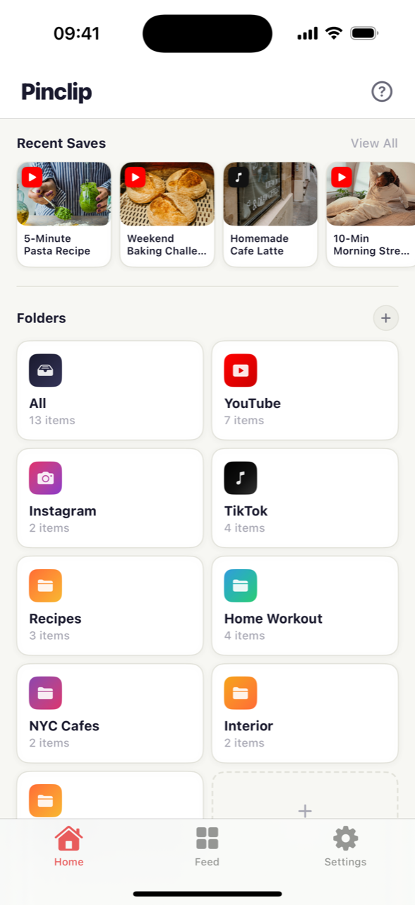
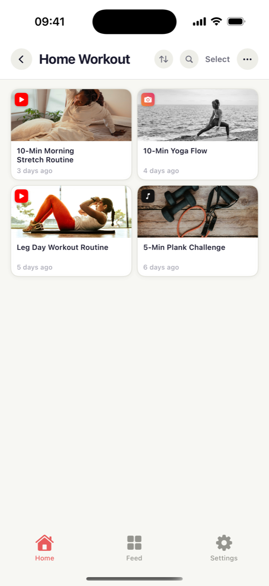
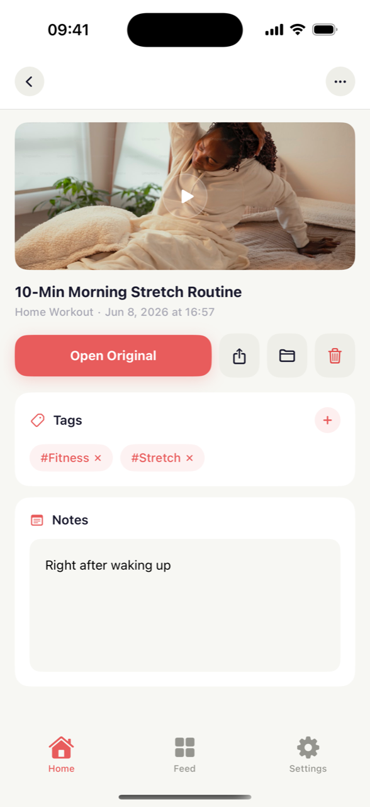
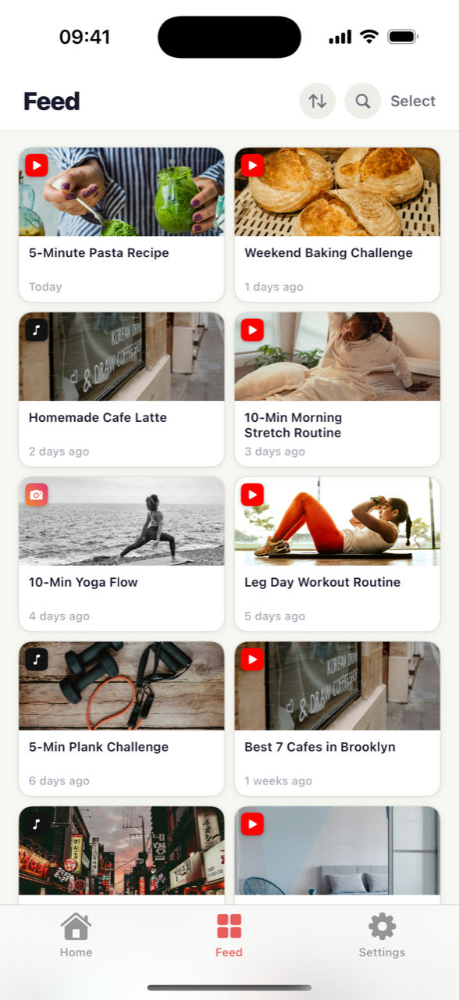

You watch a Short or a Reel, think “I'll come back to this” — and then it's gone. Pinclip is a place to keep those videos. Tap the share button on any video, choose Pinclip, and that's it: the title and preview picture are added automatically, and everything is sorted into folders.

Watching something on YouTube, Instagram or TikTok that you want to keep? Tap the share (arrow) button below it and choose Pinclip. You never have to leave the app you're in.
It grabs the video's title and preview picture automatically. You don't have to type anything — your collection ends up looking like a photo album, easy to scan.
Make folders like “Cooking” or “Workout” and drop videos in. Add tags and a little note, and you'll never forget why you saved something.
“That pasta video from last week…” — you often can't remember the title or the channel. In Pinclip, you just open the folder or tap a tag, and there it is. Like this:
It doesn't matter which app the video came from — you save them all the same way. YouTube and TikTok videos even fill in their own title and preview picture, and everything you save can be searched in one library.



You don't have to close YouTube, Instagram or TikTok. Share button → Pinclip — two taps and you're back to watching.
Put your favorite folders or videos right on your phone's Home Screen. Unlock, tap once, and the video is playing.
With Pro, videos you save on your iPhone show up on your iPad too. It syncs through your own iCloud, so it stays private.
Send a whole folder as a single link. Your friend can browse it in their web browser — and import it into their own Pinclip if they like it.
Pinclip automatically groups videos by where they came from — YouTube, Instagram or TikTok. No effort needed.
Add a tag like #cooking, or a note about why you saved it. Later, tap the tag and every related video shows up.